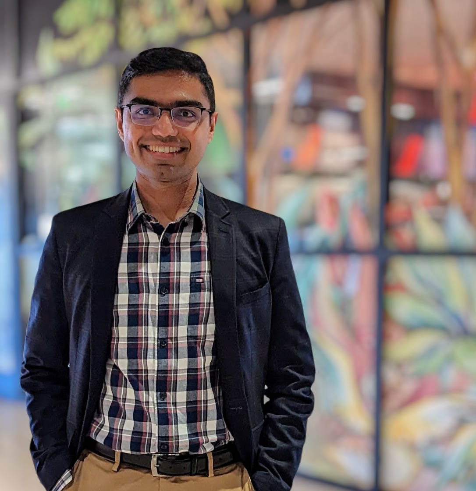

Email: suvinay@csail.mit.edu • CV • Scholar • LinkedIn • Twitter
I am a Senior Staff Engineer at Google, building AI supercomputing systems (TPUs). I work at the intersection of hardware, systems research, and performance engineering.
Before Google, I received a Ph.D. from MIT (CSAIL), advised by Daniel Sanchez, where I helped develop new programming models and multi-core architectures for challenging forms of parallelism. My masters at MIT, advised by Li-Shiuan Peh, was on high-performance interconnection networks. Prior to MIT, I spent a wonderful four years as an undergraduate at IIT Madras.
I co-host the Computer Architecture Podcast with Lisa Hsu (Microsoft) — conversations with leading researchers and practitioners in computer architecture.
Outside of work, I give technical talks on TPUs at universities and conferences. I am passionate about music: perform with bands, and support the arts through operating roles in Bay Area music organizations (e.g., South India Fine Arts).